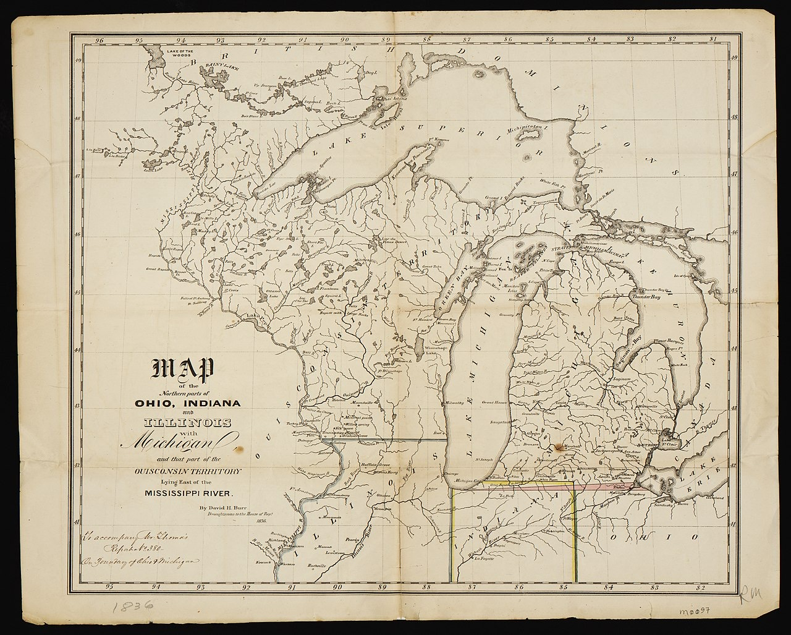

The Occupation of Northeast Wisconsin
How a surveyor’s error, a war over Toledo and a deal in Washington cost Wisconsin its northeast, and why the records have been so hard to find.
A land divided by a lake it never crossed
Look at a map. The land Michigan calls its “Upper Peninsula” shares a long border with Wisconsin, runs on the same iron ranges and, in its western counties, keeps the same time zone. Its only physical connection to the rest of Michigan is a five-mile bridge that did not exist until 1957.
For its first 120 years as part of Michigan, you could not drive from the Upper Peninsula to Lansing without a ferry, or without passing through Wisconsin.
Geography made Greater Wisconsin one. Politics split it in two. This is how it happened.

1787 to today
Select an era to filter, or open any entry to read the full record.
-
1787July 13
The Ordinance drew a boundary due east from the southern tip of Lake Michigan. Relying on the inaccurate Mitchell Map of 1755, Congress assumed that line would reach Lake Erie north of the Maumee River. It did not.
Why it matters: Every problem that follows, Toledo included, begins with this surveying error. Wisconsin did not make the mistake. Wisconsin would pay for it.
-
1805June 30
At its creation, Michigan Territory’s western boundary ran up the middle of Lake Michigan. The forests, copper and iron to the west were not part of it. Remember this. Michigan would later insist otherwise.
-
1818
For the next eighteen years, the whole of Greater Wisconsin, from the Mississippi to the St. Marys River, was governed from Detroit. Officials described the arrangement as administrative. Temporary. A placeholder until Wisconsin could govern itself.
OneW position: Placeholders do not get to keep the furniture.
-
1835Spring
Ohio claimed the Harris Line. Michigan claimed the Fulton Line. Militias faced off along the Maumee River. Shots were fired, mostly into the air. The only recorded casualty was a Michigan deputy sheriff, stabbed with a pocketknife during an arrest attempt in Toledo. He survived.
Wisconsin was not consulted. Wisconsin was not involved. Wisconsin would nonetheless pay.
Also in 1835: Michigan swears in 24-year-old Stevens T. Mason as “Governor” of a state that Congress has not yet admitted.
-
1836June 15
Michigan’s “Governor” demanded compensation for the loss of Toledo. Washington acquiesced. The compensation was the western Upper Peninsula, land that Michigan’s own 1835 constitution had not even claimed.
Why did Jackson side with Ohio? Historians commonly point to the 1836 presidential election. Ohio had 21 electoral votes. Michigan, as a territory, had none.
Note: Wisconsin, as a territory, also had none. Draw your own conclusions. We have.
-
1836July 3
The new territory stretched west past the Mississippi, but its northeastern edge followed the Menominee and Montreal rivers, the line negotiated for Michigan’s benefit. Wisconsin was born with a piece already missing.
-
1836September
Delegates objected to losing Toledo and considered the Upper Peninsula a worthless wilderness. Within a decade they would find out exactly how much copper and iron that “wilderness” held.
-
1836December 14
The so-called Frostbitten Convention was not authorized by Michigan’s legislature. Its delegates accepted the terms anyway, and Congress accepted their acceptance. Michigan’s statehood, and the Occupation, rest on its vote.
Records request #14: In 2026 OneW asked Michigan for all records relating to this convention. The response: “No responsive records.” See the FOIA files.
-
1837January 26
As of today, Greater Wisconsin has spent 69,000 days under Michigan administration. The clock at the top of every page of this site counts from this date.
-
1841to 1844
The “worthless wilderness” Michigan had reluctantly accepted turned out to hold some of the richest copper and iron deposits on Earth. America’s first great mining rush began here, years before anyone found gold in California.
Consolation prize: Michigan was compensated for a swamp with a mountain of copper.
-
1846
Its shafts would eventually run more than a mile and a half down the incline, among the deepest in the world. How many of the people who worked there were, by birthright, Wisconsinites? We asked.

-
1848May 29
By statehood, the copper boom was in full swing just across the Menominee River. Wisconsin’s founders could see the wealth from their own riverbanks. They could not touch it.
-
1855
The locks at Sault Ste. Marie turned the region into one of the great ore-shipping corridors of the industrial age. The ore went east. The profits went east. The bill stayed here.
-
1914
When America’s central bankers drew their districts, they sent Lower Michigan to Chicago and the Upper Peninsula to Minneapolis, into the same district as Wisconsin’s northwestern counties. The bankers knew.
Possible Unionist sympathies? OneW has requested comment from the Federal Reserve. We remain hopeful.
-
1957November 1
Michigan calls it a bridge. We call it a shackle. Read about the symbols of oppression.

-
1970s
OneW respects the spirit of the Superior movement. But independence is a half-measure. The Upper Peninsula does not need a new home. It needs to come back to its old one.
-
2019
What began as a twelve-slide presentation is now a movement with three programs: Explore the History, Uncover the Coverup and Bring About the Reunification. Read our story.
-
2026June 15
The next chapter of this timeline has not been written yet. Add your name and help write it.
The men behind the Deal
Stevens T. Mason was 19 when he became Michigan Territory’s acting governor and 24 when he was sworn in as “Governor” of a state Congress had not admitted. He led Michigan into the Toledo War, lost it, and then demanded compensation.
Andrew Jackson, “President” and “General,” needed Ohio’s votes. He signed the 1836 Act that gave Toledo to Ohio and Greater Wisconsin’s northeast to Michigan.
Quotation marks are OneW’s editorial position.


Divide and conquer
One deal in 1836. Nearly two centuries of consequences.
Wisconsin lost
- Over 40,000 km² of land, more than Maryland and Delaware combined
- A population that today numbers about 300,000 people
- Its shoreline on Lake Huron, and most of its Lake Superior coast
- The copper country and three iron ranges
Michigan gained
- Wisconsin’s iron mines and copper lodes
- Ports on Lakes Superior and Huron
- Added representation, and power, in the U.S. Congress
- A peninsula it would not physically connect to for 120 years
History is not finished
The Deal of 1836 was made by Congress. It can be revisited by Congress. Tell them to start.